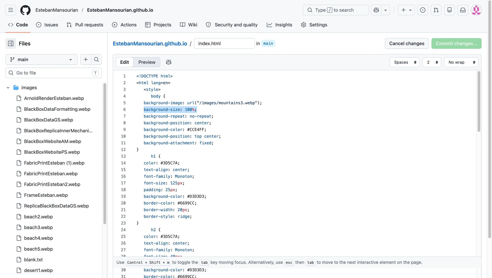
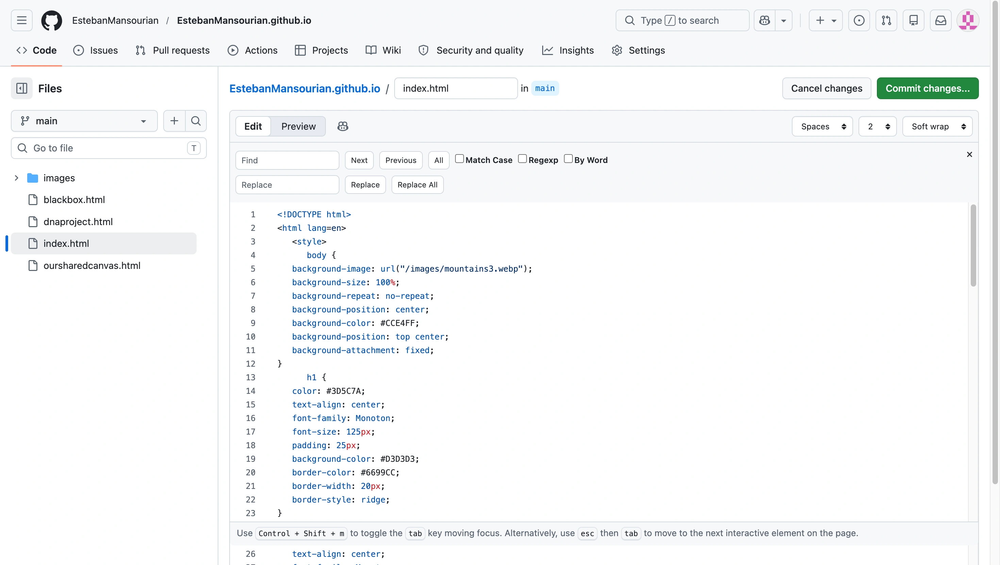
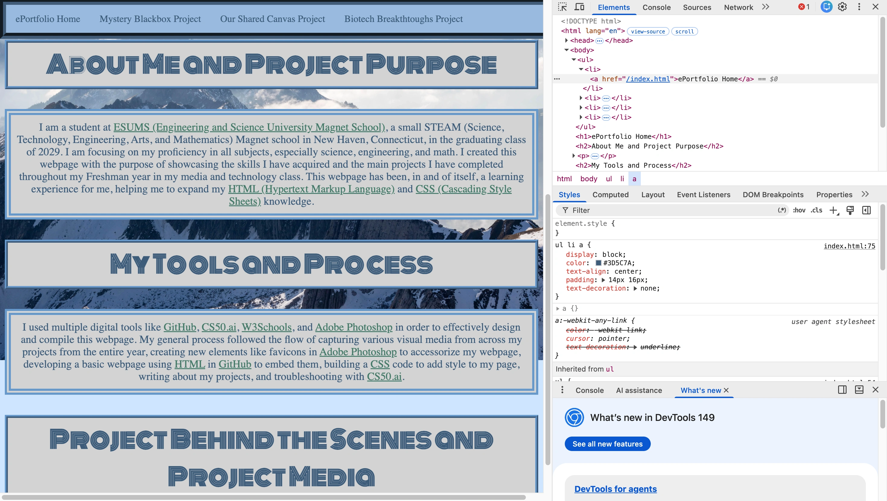
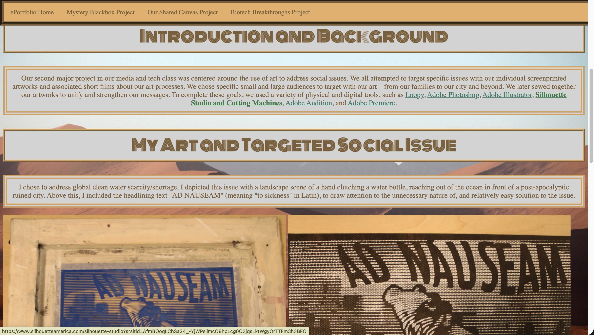

I am a student at ESUMS (Engineering and Science University Magnet School), a small STEAM (Science, Technology, Engineering, Arts, and Mathematics) Magnet school in New Haven, Connecticut, in the graduating class of 2029. I am focusing on my proficiency in all subjects, especially science, engineering, and math. I created this webpage with the purpose of showcasing the skills I have acquired and the main projects I have completed throughout my Freshman year in my media and technology class. This webpage has been, in and of itself, a learning experience for me, helping me to expand my HTML (Hypertext Markup Language) and CSS (Cascading Style Sheets) knowledge.
I used multiple digital tools like GitHub, CS50.ai, W3Schools, and Adobe Photoshop in order to effectively design and compile this webpage. My general process followed the flow of capturing various visual media from across my projects from the entire year, creating new elements like favicons in Adobe Photoshop to accessorize my webpage, developing a basic webpage using HTML in GitHub to embed them, building a CSS code to add style to my page, writing about my projects, and troubleshooting with CS50.ai.



